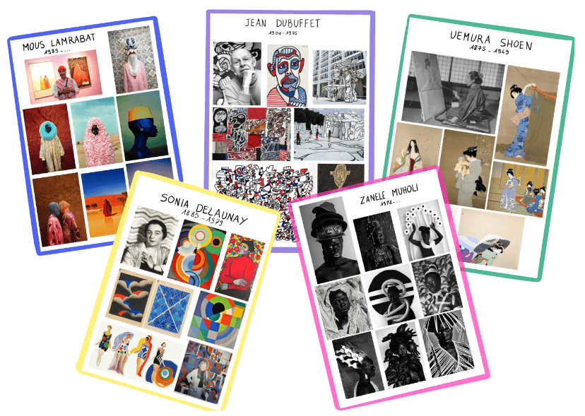

Je préfère travailler sur un grand thème par période plutôt que sur des artistes ciblés. Par exemple je choisis de travailler sur l'autoportrait. Je vais chercher des artistes varié.es qui ont travaillé sur l'autoportrait. Des femmes, des hommes, des personnes blanches et non blanches, de différentes époques et de mouvements aussi variés que possible.

Pendant une période précise je peux choisir des artistes travaillant sur des supports très variés, ou au contraire des artistes ayant un point commun en fonction de ce que je veux transmettre aux élèves lors de cette période. Par exemple dans le cas de ma séquence sur l'autoportrait je me suis limitée à la peinture et à la photographie car je voulais faire un travail de tri entre ces deux formes d'art. Par contre sur l'année entière je veille à leur présenter un maximum de diversité : sculpture, photographie, peinture, esquisse, art numérique, vidéo…
Pour chaque artiste, je crée une fiche mémo qui donne une vue d'ensemble sur son travail. Nom, prénom, dates de naissance et éventuellement de mort et quelques œuvres en partie choisies selon les besoins de ma séquence. Ce mémo est un outil très pratique à afficher au tableau pour effectuer avec les élèves des comparaisons, des classements en fonction des époques, des mouvements ou des techniques utilisées.
Lorsque nous ne les utilisons pas sur le tableau pour un travail collectif, elles sont rangées dans notre porte vu d'art, classées selon les grands thèmes étudiés, à disposition des élèves. On s'y réfère régulièrement au cours de l'année et un artiste peut être réutilisé dans plusieurs grands thèmes. Il m'arrive de refaire une fiche mémo pour un même artiste si je souhaite mettre en avant d'autres œuvre. On explore